Miller
https://github.com/johnkerl/miller
Miller 是一个命令行工具，用于查询、整形和重新格式化各种格式的数据文件，包括 CSV、TSV 和 JSON。
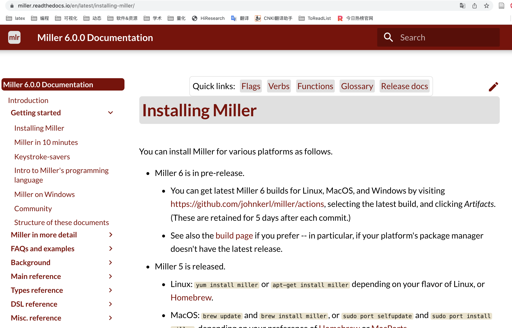
TTS
https://github.com/coqui-ai/TTS
TTS 是一个用于高级文本到语音生成的库,可以根据你一段录音风格，迁移到其他任意语言文本，并将文本转为声音。
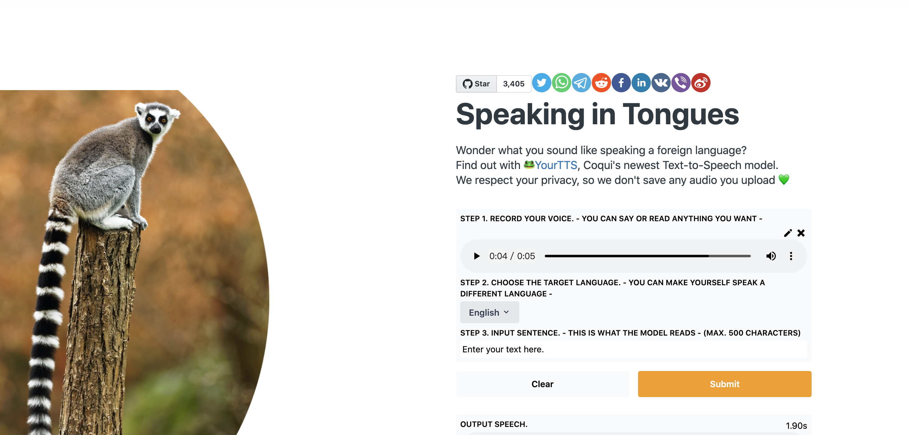
exa
命令行ls的现代替代品。
exa是一个改进的文件列表器，具有更多功能和更好的默认设置。它使用颜色来区分文件类型和元数据。它了解符号链接、扩展属性和Git。它很小，速度很快，只有一个二进制。
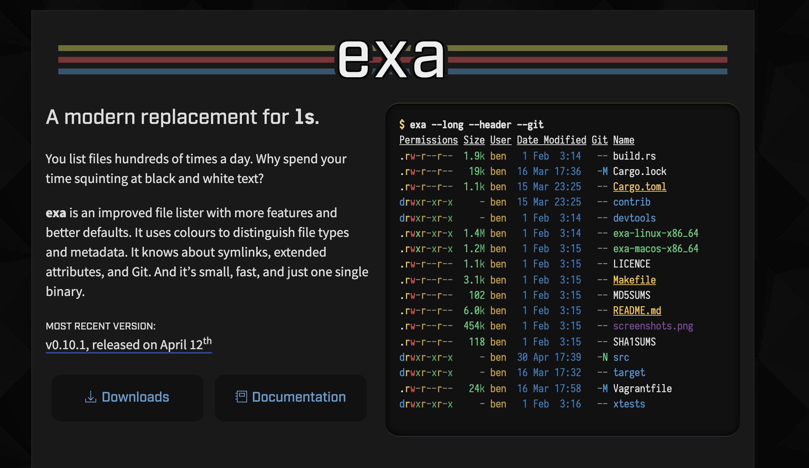
Learn X in Y minutes
在 Y 分钟内学习 X; 来一次您最喜欢的语言的旋风之旅。
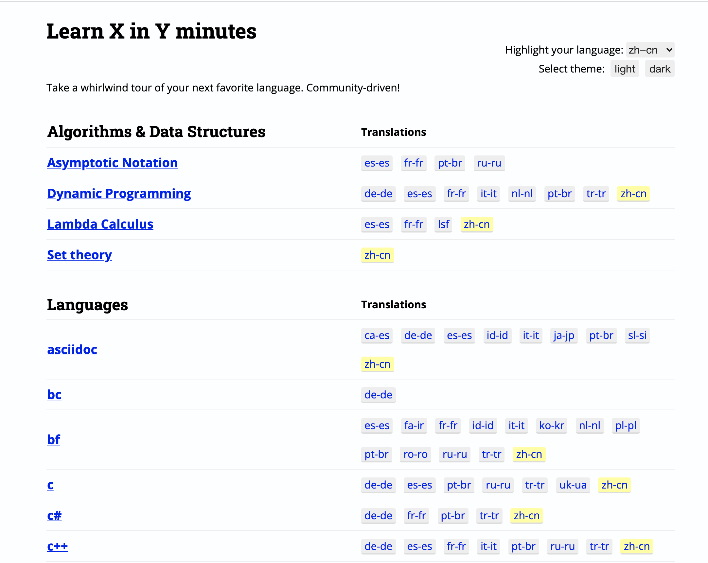
DoodleCSS
https://github.com/chr15m/DoodleCSS
手绘风的html/css主题
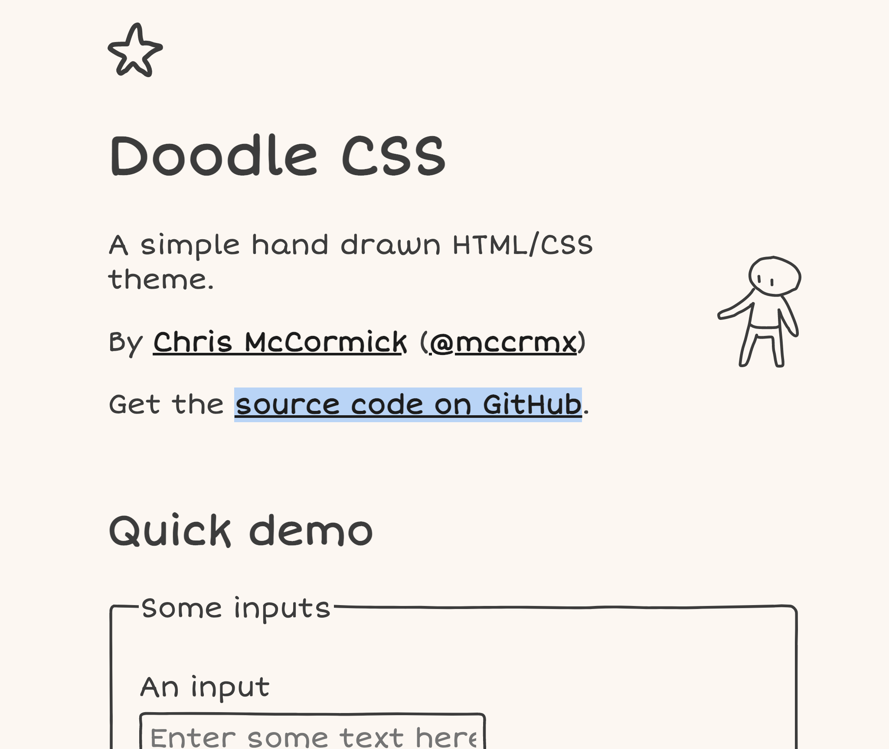
Wiki
现代维基百科, 重新设计的用户界面
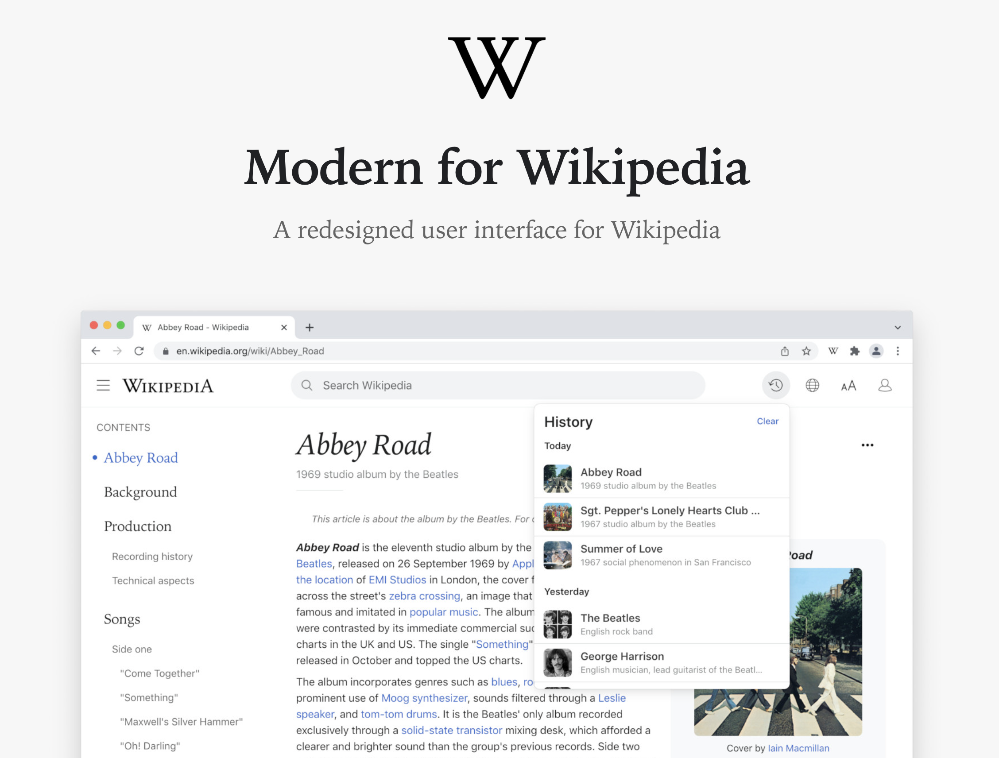
matplotlib-cheatsheet
分初、中、高级，常用的matplotlib语法
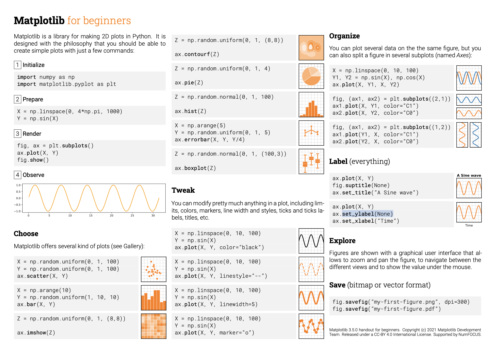
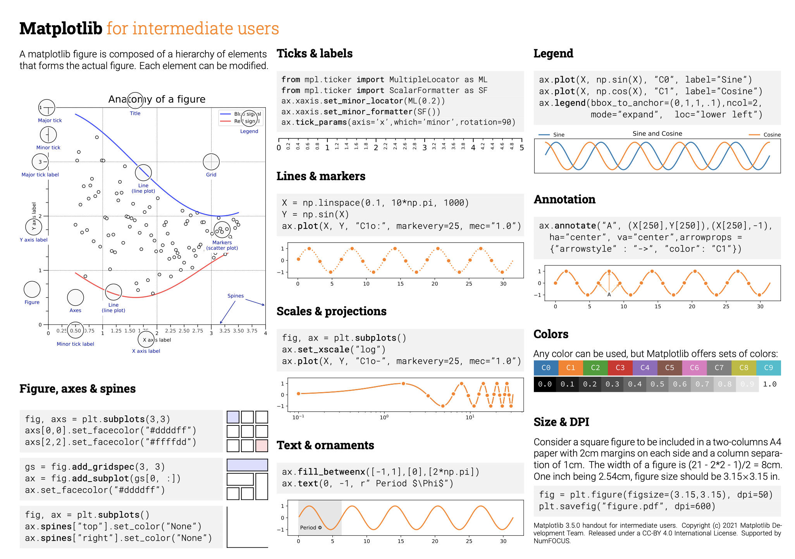
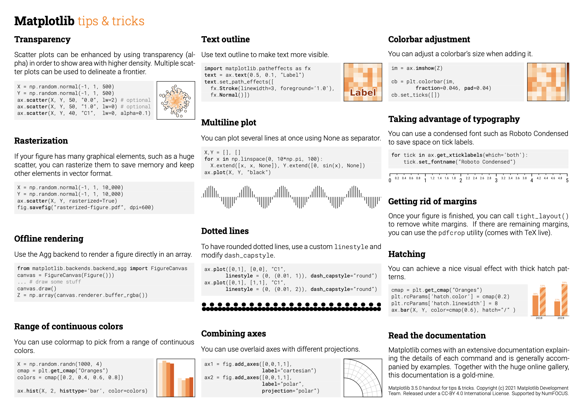
rssproxy
https://rssproxy-v1.migor.org/
将任意网址转为RSS源
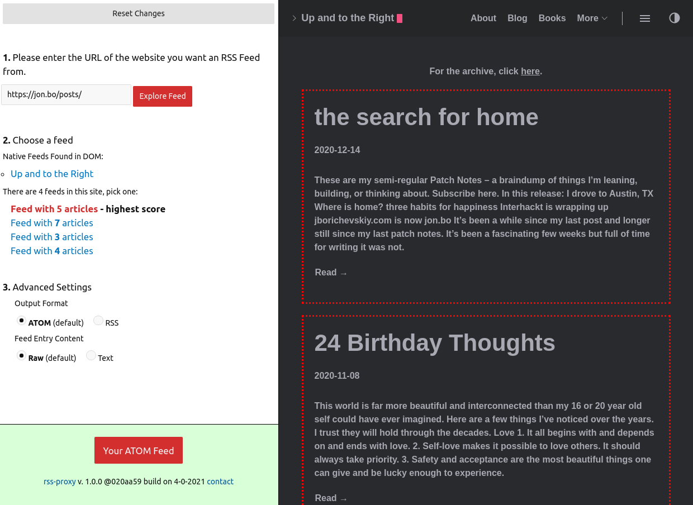
Fluent-Reader
使用 Electron、React 和 Fluent UI 构建的现代桌面 RSS 阅读器
https://github.com/yang991178/fluent-reader/
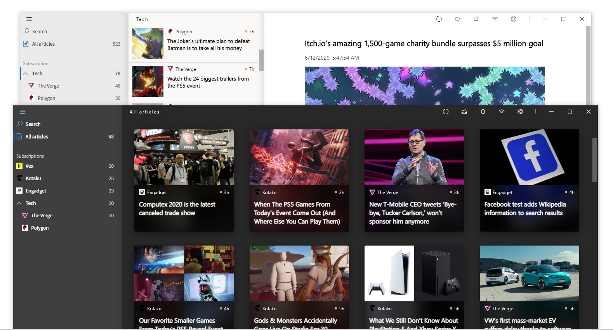
ddddocr
https://github.com/sml2h3/ddddocr
通用验证码识别OCR pypi版
import ddddocr
ocr = ddddocr.DdddOcr(old=True)
with open("test.jpg", 'rb') as f:
image = f.read()
res = ocr.classification(image)
print(res)
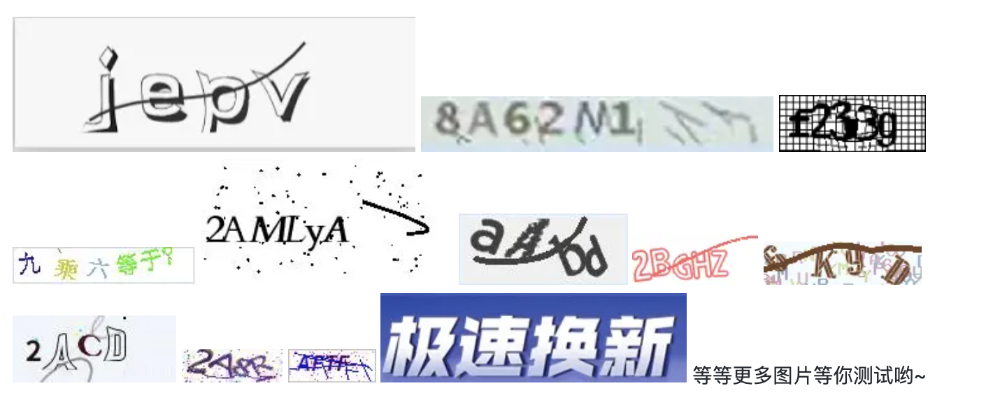